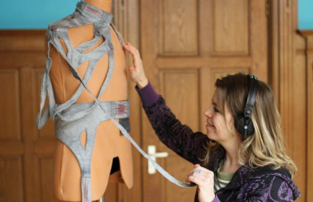

Enter the Writers
Inter-Activity
By Marloeke van der Vlugt

For Enter the Writers, I am going to immerse myself over the coming weeks in the concept of interactivity; specifically in relation to the works shown in the Media Lab. What are the features of interactive installations? Can you see different degrees, or amounts, of interactivity with each work? What reasons does an artist have to create an interactive installation? How does a work get the visitor interested enough to interact? And how do visitors experience the work?
1. Before you read on, put your headphones on.
How would you describe an interactive work of art? A quick flick through the publicity material about works of this sort recently shown in the Media Lab, gives the following:
- “Interactive installations are interactive artworks that you can control by jumping through, riding a bike, swaying, or even mowing the lawn.”
- “The artwork changes colour in response to the visitors.”
- “Soundwave is a remarkable installation that is set in motion by sound. The louder you scream, the more the colossus begins to undulate.”
An important criterion for interactivity is what is called, ‘the influence of the viewer on the artwork’. When the viewer does something, the appearance, the movement, or the physical state of the work changes.
However, to me, this seems to emphasise only one side of the coin. A work is only interactive when the changes in that work challenge the behaviour of the viewer, and vice versa. You can take the reasoning further and state that true interactivity should always result in the creation of another, unique work; after all, each person is unique, and will react differently and give a different input...
2. Grab a biscuit
These unending possibilities are, of course, very difficult to achieve. And with many technological installations you soon experience limits in what you can do. Every possibility of interaction will, of course, have been devised and pre-programmed by the creator.*
The aim is then to discover what the artist wants to convey through the interaction. Perhaps the interaction is focused on expanding our senses, the creation of a social experience, or the generation of a specific emotion.
3. Ignore the advice of points 1 and 2
When the message is clearly communicated, the limits of interaction need not be seen as prohibitive. Perhaps the experience of limitation is the right message!
For me, as a maker of performative installations, the actual interaction is at the service of something else. When a viewer interacts with a work, he or she becomes a performer, and presents (a part of) the work’s significance to other observers. He or she is actually showing how modern people communicate with their environment through technology.
4. Take a selfie :)
*) The self-learn(ing) computer systems that are currently emerging are an exception to this rule.
xxxxxxx